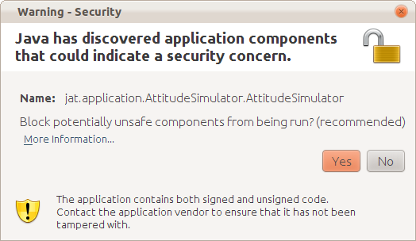
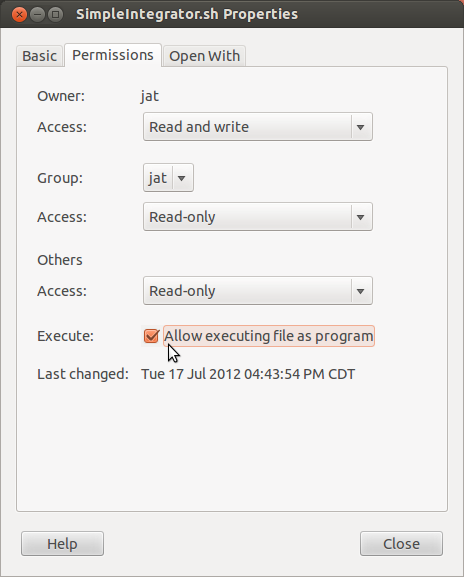

You need Java on your computer to run the JAT applications.
Click on this link to verify that you have Java installed on your computer or to download Java:
The recommended version of Java for JAT is Java 7.
On Ubuntu, the easiest method of installing Java 7 is described at
Using webupd8.org's strikingly simple method.
In a terminal, enter
|
sudo add-apt-repository ppa:webupd8team/java
sudo apt-get update
sudo apt-get install oracle-java7-installer
|
To verify, enter
| java -version |
Some of the applications that have 3D graphics require that Java3D is installed.
You can verify that you have Java3D installed on your computer:
If you do not have Java3D installed on your computer at all, see
| sudo cp /usr/lib/jni/libj3dcore-ogl.so /lib/ |
You may have Java3D on your computer, but your computer needs to have the according permissions to run Java3D applications in your web browser.
On Ubuntu Linux, this is accomplished by creating a security policy file named ".java.policy" in your home directory. For simplicity, you could grant Java all permissions to test the software, but you should not leave this in place as it could compromise the security of your system. Example:
|
Contents of file /home/jatuser/.java.policy: |
| grant { permission java.security.AllPermission; }; |
You will have to close all open browser windows and restart the web browser to enact the policy change.
Some of the applications can be run directly in your web browser. These applications are on the
In addition to having Java, you also need a Java browser-plugin for you web browser. The link above should help you configure you computer so that it can run JAT applets.
The program execution from the live web site may feel slow, due to some loading of files during the program execution. You can get a much better and faster experience by taking the following steps:
When you run the applets from your local hard drive, you may get a security warning. If you are not comfortable runnning an unsigned component, you can block the applet.

Some of the applications can be started by running the according script files. On a Linux system, you have to make sure that the script file has permission to be executed. Open a file manager and right-click on the script file, then set the permission:

Some of the applications require the DE405 Ephemeris data files from JPL. If you are running an application from the JAT web site, the data files will be downloaded automatically.
If you are running the application from your local hard disk, download the files that you need for the time period you are working with from
ftp://ssd.jpl.nasa.gov/pub/eph/planets/
and navigate to the folder ascii/de405/ within the FTP site.
For example, the file ascp2000.405 contains the data between the year 2000 and the year 2020. If you have enough disk space and download bandwidth, you can simply download all the files in the directory.
The data files need to be placed in the directory
jat/data/core/ephemeris/DE405data
within the JAT directory structure.